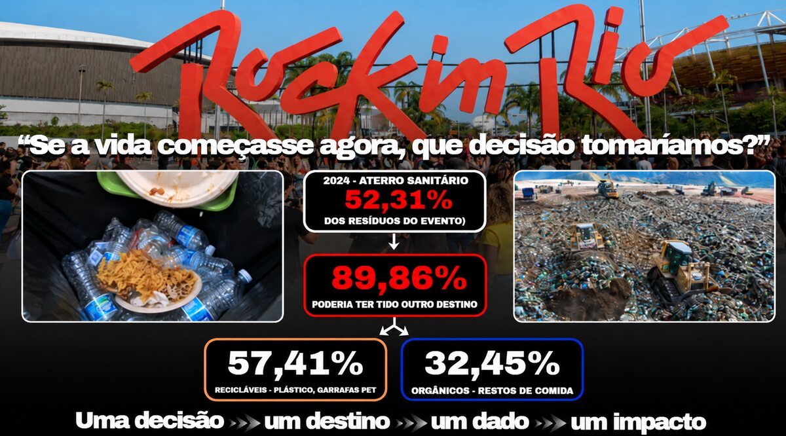
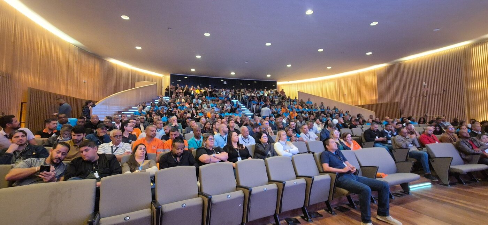

Histórico
As gravimetrias anteriores ajudam a entender a composição dos resíduos. Os relatórios publicados pelo Rock in Rio registram os compromissos e resultados de cada edição. A comparação será organizada por edição, fonte e recorte.
O Relatório de Sustentabilidade do Rock in Rio 2024 apresenta, nas páginas 84 a 93, os dados de coleta, triagem e destinação dos resíduos. No balanço da edição do Rio de Janeiro, de 11 a 22 de setembro, foram registradas 205,26 toneladas destinadas à reciclagem e cerca de 60 toneladas encaminhadas ao aterro, o que corresponde a aproximadamente 77,4% de recuperação nesse recorte. Entre os materiais triados pelas cooperativas, 64% foram classificados como recicláveis e 36% como rejeito, o que ajuda a entender por que a COMLURB, no planejamento de 2026, reforçou a separação na origem e o acompanhamento da destinação após a triagem.
Consultar o relatório oficial a partir da página 84
O que as gravimetrias de 2022 e 2024 revelaram

Através dos estudos da Gerência de Gravimetria da COMLURB, coordenados por Josué Bastos e Bianca Ramalho Quintaes, foi possível identificar a composição dos resíduos coletados no Rock in Rio, estimar o potencial de aproveitamento dos materiais e apontar onde a separação precisava melhorar.
Rock in Rio 2022. A COMLURB analisou 70 amostras em 10 pontos do festival. Orgânicos e plásticos foram os componentes mais presentes, com 30,88% e 30,18% da massa analisada, respectivamente. O estudo encontrou materiais potencialmente recicláveis misturados ao fluxo não reciclável e 13,05% de orgânicos no fluxo da coleta seletiva. Esses achados apontaram a oportunidade de recuperar mais materiais com a separação na origem e de facilitar o descarte correto com uma identificação mais clara dos contêineres. Consultar a Caracterização Gravimétrica de 2022, páginas 12 a 14 e 17
Rock in Rio 2024. A COMLURB analisou 27 amostras em 9 pontos, somando 597,9 kg. Os recicláveis representaram 57,41% da massa analisada e os orgânicos, 32,45%. Juntas, essas frações somaram 89,9% de potencial de valorização. O estudo mostrou onde parte desse potencial se perdia: 47,8% da massa amostrada nos caminhões de orgânicos era de materiais recicláveis, e 11,1% da massa amostrada nos caminhões de recicláveis era de orgânicos. Consultar a Caracterização Gravimétrica de 2024, páginas 10 a 12 e 21
Como os estudos orientaram 2026. A gravimetria de 2022 mostrou onde a mistura ocorria, e a de 2024 ajudou a dimensionar quanto da massa analisada poderia ser aproveitado por reciclagem ou tratamento de orgânicos. Esse potencial ajudou a embasar a meta operacional de 70% de desvio de aterro. Para converter parte desse potencial em recuperação efetiva, a COMLURB reforçou a separação na origem e o acompanhamento da destinação após a triagem.
Reunião preliminar de alinhamento
Em 30 de julho de 2026, a DSU realizou uma reunião preliminar para alinhar o planejamento da operação de limpeza e gestão de resíduos do Rock in Rio 2026 e validar as informações que embasariam esse trabalho. A ata registra as referências analisadas, as diretrizes para a separação e a destinação dos resíduos, as responsabilidades das equipes e os pontos que ainda precisavam de confirmação antes do evento. Consultar a ata da reunião
